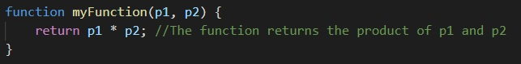
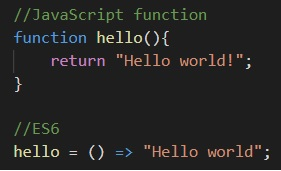
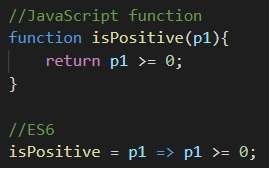
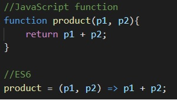
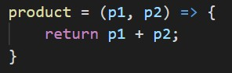
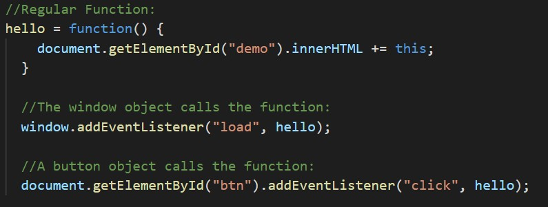
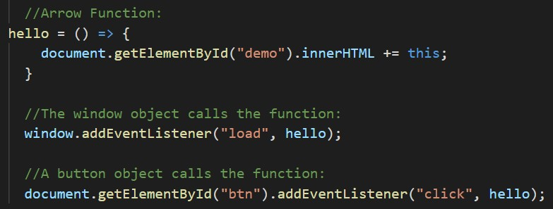

Arrow Functions in ES6
Written by Gustavo Rocha Stamm
In the programming world, the functions are very useful, making the programmer`s lives easier and simpler. With the arrival of ES6, it is possible to code functions
in different ways. One possibility is using arrow functions. Although it looks like difficult in the first look, arrow functions can make the code shorter.
Let`s take a look how it works.
First of all, we need to understand what is a function. A function is a block of code that is designed to perform a specific task. To use the function, it is
necessary to call it (when something invokes it). In JavaScript, a function will always return a value. However, if no value is specified to be returned, the
function will return undefined. Besides, it is possible to use parameters in a function. We can pass values to a specific function and this values will be used
within the function. Below it is possible to visualize one function, which receives two parameters, p1 and p2:

Figure 1 - Example of a function with two parameters
As was said above, to use this function we need to call it in our code, otherwise it will have no utility. So, we just need to invoke the function and pass these two
parameters and the function will return the multiplication of the two values.
In 2015, ES6 was published, bringing with it the arrow functions. The syntax is different and it looks more complex, but after understood, it is not a big deal. As the normal
functions, we can pass parameters or not, and depending how many parameters we are using, the syntax changes too. So, let`s start with the most simple example, no parameters.
To make it easier, we will compare a normal JavaScript function with an arrow function:

Figure 2 – Arrow function with no parameter
The arrow function does not use the “function” syntax in the beginning to determine that this is a function. Between the parentheses is empty because we do not have parameters and
we add a arrow “=>” to show where de function starts. The next example will show an arrow function with one parameter:

Figure 3 - Arrow function with one parameter
When we have just one parameter, we do not need to put parentheses. However, if we have two or more parameters, we need to use the parentheses, as it is shown below:

Figure 4- Arrow function with two parameters
As we can see, the syntax changed. In all the cases we did not use the word “return” because there was just one statement. If you want to use to word
“return” you must use curly braces, like the example below:

Figure 5- Example of arrow function with "return" syntax
One other important point is the use of “this” in regular functions and arrow functions. For regular functions, the key “this” represents the object that calls the function.
However, for arrow function, “this” will always represent the object that defined the arrow function.

Figure 6 - Example of this in a regular function
In this case, the first listener will return the window and the second one will return the button. However, for example below, both listeners will return the window,
because the window is the owner of the function.

Figure 7- Example of this in an arrow function
Arrow functions are very useful and although it looks like more difficult, when you get use with it, you will realize that it is better. The ES6 brought other features
that are as important as Arrow Functions and must be studied as well. However, all this content is going to stay for another article.
References
https://www.w3schools.com/js/js_arrow_function.asp
https://www.w3schools.com/js/js_functions.asp
https://codeburst.io/javascript-functions-understanding-the-basics-207dbf42ed99